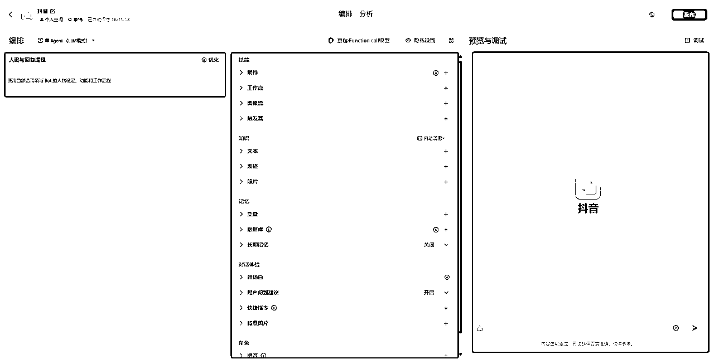

来源：https://latdpyvm1d6.feishu.cn/docx/JSg9d9WGro5o6uxGwYnclNi0nYe
AI Agent是一种先进的软件系统，它能够理解并执行基于预设指令的任务。它的核心优势在于对工作流程的逻辑思考和拆解能力，旨在通过替代部分人力工作来解决执行和重复性问题，从而提高效率并释放人力资源。
AI Agent的主要功能包括：
你是否还在为公众号文章的选题而苦恼？是否觉得从抖音视频提取文案再转换成文字既繁琐又耗时？是否担心这样的过程会降低文章的质量和创作效率？
现在，一个智能体，短短一分钟内，将热门抖音视频的文案转化为公众号文章。不仅能节省你的时间，还能保证文章的高质量。
首先，访问Coze的国内官方网站。您可以通过使用您的某音账号或手机号进行快速注册。注册完成后引导至主页面。
在主页面，您将看到一个“创建Bot”按钮。点击按钮系统弹出一个对话框，提示您选择一个工作空间。选择完毕后，是时候为您的Bot起一个响亮且易于记忆的名称了。同时，您可以选择一张引人注目的图标，或者利用AI功能自动生成一张独特的图片作为Bot的图标。
在设置完Bot的基本信息后，点击对话框右下角的“确认”按钮。这将带您进入Bot的编排页面，在这里您可以详细设置Bot的响应信息。

先看看Bot的流程。首先是用户输入搜索关键词，如：西班牙欧洲杯夺冠，然后调用抖音视频插件搜索相关的视频内容，在这里可以设置发布时间、排序方式等参数。
Bot将调用读取链接插件来获取视频的原始文案。然后，利用大模型技术，对文案进行智能改写，提升内容的吸引力和相关性。最后，使用排版插件对改写后的内容进行专业的排版，确保最终输出的内容既美观又易于阅读。
接下来创建上面的工作流，点击添加工作流按钮。
点击页面上的“添加工作流”按钮，在弹出的对话框中继续点击“创建工作流”。需要填写工作流的名称和详细描述，然后点击“确认”完成创建。
进入到工作流编排页面，默认生成两个工作流的节点，分别是开始和结束节点。对应的是输入的内容和输出的内容。我们需要在他们中间插入插件或者大模型针对输入内容进行处理等操作然后输出。
根据上面的工作流流程图，我们需要先添加一个抖音视频读取插件。点击左边添加插件按钮，然后在弹出的添加对话框搜索抖音视频插件。
点击抖音视频插件可以直接添加插件到工作流。看看抖音视频插件提供的参数：
count：搜索返回视频数量，可选参数，默认是5条。此工作流中只用到一条视频进行处理
keyword：搜索关键词，必选参数。
sort_type：排序方式，这个参数比较有用，可以自定义设置搜索返回的视频排序方式，比如按照最多点赞排序。
search_id：维护搜索连续性的参数。
publish_time：发布时间，可以设置多少天内发布的视频
点击界面右侧的添加按钮，将所需的插件添加到工作流中，并仔细设置每个插件的参数值。确保每个插件都正确配置，以满足您的特定需求。
需要把两个工作流节点用箭头连起来，直接将鼠标移动到节点的连接点上，然后拖动箭头至另一个节点。keyword参数的值需要选中上一个节点的input值，其他参数则根据实际需求进行设置。
同理，把读取链接的插件LinkReaderPlugin添加到工作流中。有个需要注意的地方是Url参数要设置成get_video返回的link值，要不然读取不到链接数据
接下来需要添加两个大模型节点，一个大模型生成标题，一个大模型生成文章内容。点击左边添加大模型按钮两次，把两个大模型添加到工作流。然后分别设置好输入参数：linkReaderPlugin的content内容，再把提示词设置好。提示词非本文章重点，可以按照自己擅长的方式输入生成改写内容文案的提示词。
使用文章排版插件对产出的文案排版，需要注意的是选择输入参数时要看清楚生成内容的大模型输出数据参数。
最后把文章标题模型生成的标题指向到结束节点，把排版节点指向结束节点，注意输出的是两个数据，分别是标题和内容，选择输出内容时也要注意参数。
点击工作流编排页面右上角”试运行“按钮来运行工作流。
点击工作流编排页面右上角的“试运行”按钮来运行您的工作流。在弹出的对话框中输入搜索关键字，如“西班牙欧洲杯冠军”，然后点击运行按钮。工作流的运行动态将展示处理。如果存在设置错误，系统会指出问题所在，您可以据此进行修改。
运行完成的结果界面，其中每个节点都可以看到各自节点运行完成的产生数据。点击右上角的发布按钮，发布工作流。
把该工作流应用到Bot中，接下来输入尽可能详细要求的提示词，然后点击右上角优化按钮，自动优化您的提示词。
点击使用按钮使用优化完成的提示词，当然你也可以选择继续优化提示词。但是我们已经有一个工作流，而且工作流里已经详细设置好了流程和生成内容的要求，这里的提示词主要是针对工作流生产出的内容进行一点优化工作。
最后在右边的调试框输入搜索关键字进行调试。
测试无误后，将Bot发布到相应的平台。对于未授权的平台，授权过程也非常简单方便。
关注我，后续会分享更多AI智能体的文章和更实用的智能体。